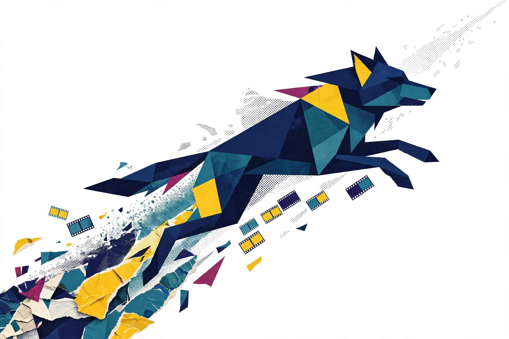
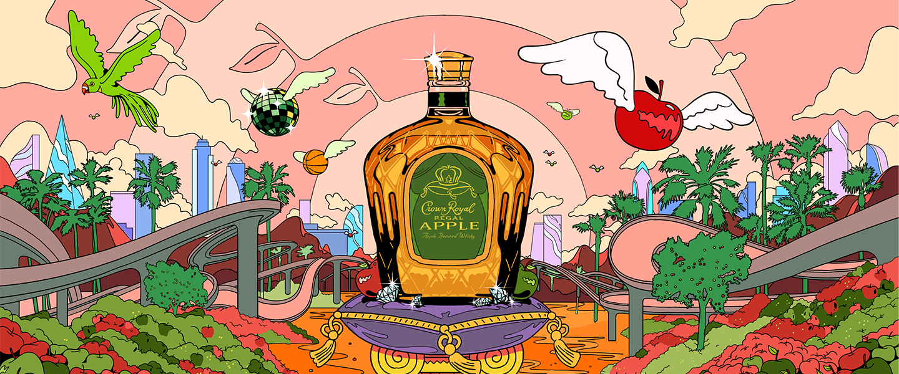
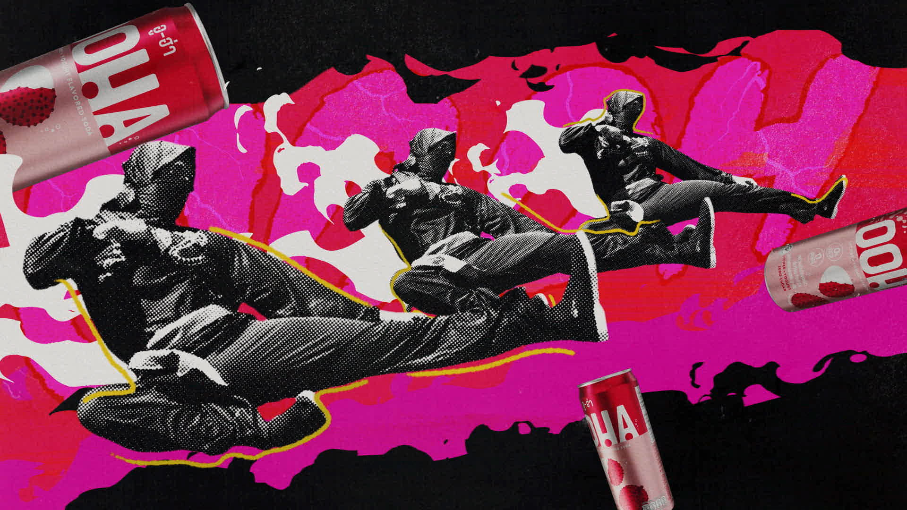
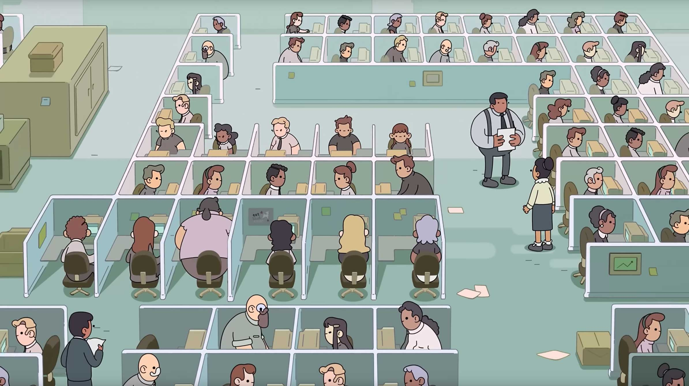
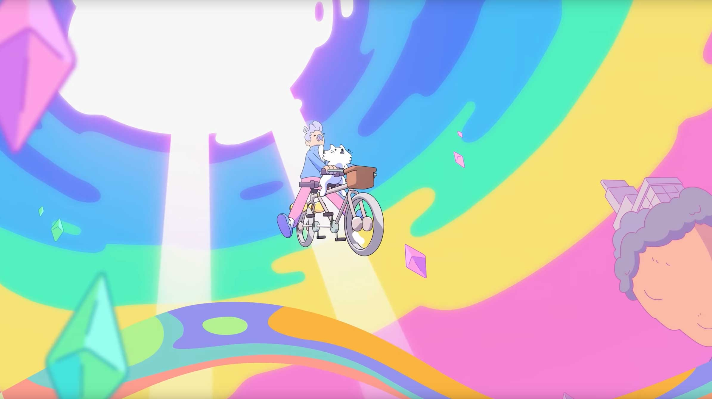
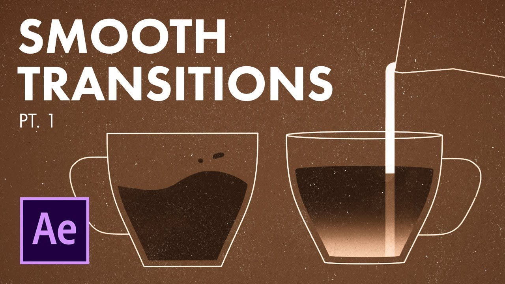
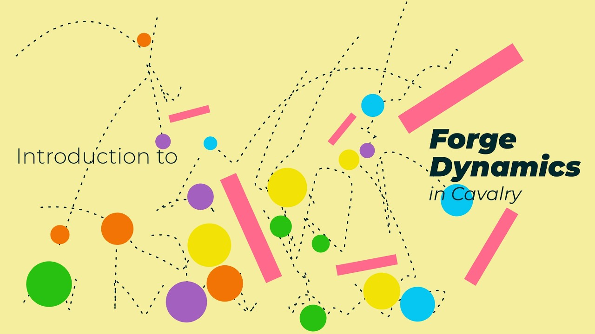

ニュース
今日のハイライト
- クリスマス商戦の広告がさらに本格化。シンガポールでは洪水への「備え」を、スイスでは孤独をほどくウーパールーパーを描く、社会派の季節ものが2本並んだ。
- モーション系は鼻が歌うAI時代のミニ・ミュージカルと、ドン・ハーツフェルトの手描き短編『Paper Trail』の2本。手触りのある造形とAIワークフローの対比が面白い一日。
- 機材はInterBEE発のソニー展示レポート、デザインはPentagramのカスタム書体によるガラ・アイデンティティ。広告＋モーション系5本／その他2本で7:3を満たす。
1. シンガポールの洪水対策キャンペーン、運ではなく備えを描く
シンガポール国家水庁PUBとTBWA\Singaporeによる洪水対策キャンペーン「Luckily You Didn't Rely on Luck」。「運よく助かった」と語られがちな場面の裏には、実はアラート確認や迂回ルートの選択といった備えがあった——という気づきを、運のいい男のユーモラスなフィルムで描く。モンスーン期を前に、行動変容を「怖がらせずに」促す社会派広告の好例。
2. Nike×バルサ、コービーの「マンバ・メンタリティ」をまとう新キット
NikeとFCバルセロナのコービー・ブライアント・コラボ第2弾、2026-27アウェイキットとコレクションの発表キャンペーン（MOX）。コービー・シースとバルサのクレストを合わせ、選手14人のポートレートで「自信・決意・野心」というマンバ・メンタリティを体現する。スポーツとストリートカルチャーのIPを、キットの物語として再設計した広告事例。
3. ウーパールーパーが孤独をほどく、CG×AIのクリスマス広告
スイスのブランド連合Swiss Brands Unitedによる「Give the Gift of Closeness」。水槽でひとり暮らすウーパールーパーのオスカーが、特別な友情で変わっていく心温まるフィルム。Postoffice AmsterdamはCGとAIを組み合わせたハイブリッドワークフローで、キャラクターの感情表現を成立させた。孤独という社会課題を、かわいさと技術の両面から届ける季節の広告。
4. 鼻が歌うミニ・ミュージカル、AI時代の短編アニメーション
ベルリンのCreative Controlによる短編『Something in the Air』。嗅覚をテーマに、擬人化された鼻たちが歌い踊るミニ・ミュージカル。手描きのキャラクターデザインを起点にNano Bananaでスタイルを固定し、Seedance 2.5で動きを生成、DaVinci Resolveで仕上げるというAI併用パイプラインを公開している。「AI生成の寄せ集めに見せない」ためのアートディレクションの考え方が参考になる。
5. ドン・ハーツフェルト『Paper Trail』、手書きが綴る一人の人生
ドン・ハーツフェルトの最新短編。主人公スティーブン・リチャードソンが初めて文字を書き、名前を覚え、落書きをし、恋文や買い物リストを残していく——手書きの変遷だけで一人の人生を描く。アヌシー、サンダンス、SXSWで受賞を重ねた作品が期間限定でVimeo配信中。線の乱れや誤字までもが感情を運ぶ、手描きアニメーションの力を再確認できる一本。
6. ソニー、65mmからAI・クラウドまで「映像制作の現在地」を展示
InterBEE 2026のソニーブース展示レポート。「The power behind your story」をテーマに、VENICE 2用65mmセンサーブロック「RIALTO 65」の国内初展示、Cinema Line新製品「FX5」、ソフトウェアスイッチャー「M2L-X」による次世代ライブ制作、XYN Spatial Scanによる3DCGアセット制作まで。機材単体の性能ではなく「組み合わせた制作環境」として見せる展示の作り方が、現場の作り手に直結する。
7. Pentagram、Oyster Barの看板を丸ごと書体に──Storefront Gala 2026
PentagramがニューヨークのStorefront for Art and Architectureのガラ2026のために描いたカスタム書体。グランドセントラル・オイスターバーの壁に残るルドルフ・デ・ハラックの看板を起点に、太いストロークとクレヨン色のブロック体アルファベットをフルセットで設計。ポスター、折りプログラム、刺繍キャップまで、1つの書体がイベント全体を統べるブランディングの好例。
特集 ― デザイン特集マガジン・第5号

ふざけて、混ぜて、走らせる
――Golden Wolfと「ミックスドメディア」の快楽
ロンドン・ショーディッチの小さなスタジオから、ディズニーの『ダックテイルズ』、MTV、メジャー・レイザー、コカ・コーラ、ファレル・ウィリアムスの短編映画へ。Golden Wolfは2013年の設立以来、「不真面目なユーモアと、激しいダイナミックなアクションと、サイケデリアのあいだ」を自らの領分だと公言してきたアニメーション・スタジオだ。創設者インギ・エルリングソンの出発点は、10代から20年続けたグラフィティ。壁に描いていた人間が、なぜいま世界中のブランドから「一番クレイジーなこと」を頼まれるのか。4つの仕事から、その流儀を解剖する。
勉強ポイント
- ブリーフが一行でも、「一番クレイジーなこと」を自分で問う。 MTVの「sight」も、メジャー・レイザーのツアー・イントロも、ブリーフは一行か、ほぼ無しだった。Golden Wolfの合言葉は「誰も怒らせずにできる、一番クレイジーなことは何か」。制約が少ないときこそ、作り手が自分で問いを立てる。
- 素材は「選ぶ」のではなく「混ぜる」。 実写＋セルアニメーション＋3D＋コラージュ＋ハーフトーン。対照的な質感を一画面に衝突させることが、Golden Wolfの画面のエネルギー源だ。1つの技法に統一する前に、異物を入れてみる。
- 編集が決まれば、すべてが決まる。 クリエイティブ・ディレクターのステファン・ファルコナーは「編集の流れとエネルギーが、モーションデザインで最も重要だ」と言う。カットの流れとテンポを先に設計し、絵はそのあとに載せる。映像の設計図はタイムラインにある。
壁から始まったスタジオ
Golden Wolfを創設したインギ・エルリングソン（アイスランド出身）は、10代からグラフィティを描き続けてきた。大学でイラストレーターのジョン・マクフォールに師事し、その縁でロンドンのデザイン事務所ilovedustに入り、7年在籍した。転機はペプシの案件だ。イラストの仕事として受けたものが、クライアントの希望でテレビCMとしてアニメーション化されることになった。「できるかと聞かれて、引き受けて、作りながら覚えた」。そこから社員を集め、2013年にアニメーション専門のスタジオとして独立した。2014年時点で11人、2021年には27人・11国籍のチームになっている。
グラフィティの出自は、スタジオの美学そのものだ。壁に描く行為は、許可された画面の外側で見る人の注意を一瞬で奪う技術であり、Golden Wolfの仕事がどれも「最初の1秒で目を引く」のは、その感覚の延長線上にある。
ブリーフは一行でいい――「一番クレイジーなこと」をやる
Golden Wolfの初期の代表作に、MTVの「五感」シリーズがある。5つの感覚を5組の作家が担当し、Golden Wolfに渡されたのは「sight（視覚）」という一行だけだった。エルリングソンの回想はこうだ。「視覚に何をするか。クレイジーなことをやるしかない」。オープン・ブリーフのとき、彼らがいつも自問するのが「誰も怒らせずにできる、一番クレイジーなことは何か」だ。メジャー・レイザーのツアー・イントロも同じだ。ブリーフは存在せず、週に一度のメールだけを頼りに、既存の物語の「新しいバージョン」を自分たちで考えて作った。
2012年には、まだilovedustの一部門だったチームがカートゥーン ネットワーク20周年の記念ミュージックビデオを手がけた。Mad Decentによるオリジナル楽曲にのせ、約100人のキャラクターが登場する2分の映像で、10月1日に初公開された。のちのGolden Wolfの中核メンバーが参加している。
借りたキャラクターを、自分の速度で動かす
その技術が最も大きな舞台で試されたのが、ディズニーの『ダックテイルズ』（2017年リブート）のメインタイトル・シークエンスだ。Golden Wolfはこの仕事でエミー賞にノミネートされた。1987年のオリジナル版のテーマ曲をほぼそのままに、スクルージ・マクダック一家が宝探しの世界を駆け抜ける。背景には、スクルージの生みの親である漫画家カール・バークス（1901〜2000）へのオマージュが仕込まれ、タイトル公開直後にはディズニーの背景デザイナーがバークスの原画との比較をSNSで公開して話題になった。借りものの世界を、借りものと分からない速度で走らせる。
混ぜる快楽――ミックスドメディアと、16分への拡張
Golden Wolfの現在形を決定づけたのは、クリエイティブ・ディレクターのステファン・ファルコナーだ。ilovedustでデザイン・インターンとしてキャリアを始め、モーショングラフィックスへ移った彼は、自らを「クリエイティブに貪欲（creatively greedy）」だと呼ぶ。2Dも3Dも実写も、対照的なスタイルを2つ以上組み合わせ、混ぜて何が出るかを見るのが、概念を革新する楽しい方法だという。
彼が「自分の演出の方向性を決めた仕事」と語るのが、クラウンローヤルのフィルムだ。初めて大規模なクリエイティブチームを率い、初めて実写撮影を監督した仕事で、ここで「異なるスタイルのアニメーションを1本のフィルムに組み合わせる」方法を掴んだ。画面は、実写のボトルを中心に、イラストの風景、空を飛ぶリンゴやミラーボール、高速道路が入り乱れる。商品を「見せる」のではなく、商品を中心に世界を「組み立てる」発想だ。

同じ貪欲さは、コカ・コーラのタイ向け新ソーダ「OOHA」のローンチ・スポット群にもある。ハーフトーン加工された実写のダンサーが、ピンクのペイントのうねりの中を宙に浮かぶ。実写の身体感とグラフィックの平面性の衝突そのものが、商品の「弾ける」感じを説明している。

ファルコナーのもう一つの持論が、編集だ。「編集の流れとエネルギーが、モーションデザインで最も重要な側面の一つだ。編集が決まれば、文字通りすべてがその位置に収まる」。Golden Wolfの画面が速いのは、絵が速いのではない。カットの切り替わりの設計が速いのだ。まずタイムラインの呼吸を決め、絵はそのあとに載せる。
その流儀は、ついに短編映画の長さまで伸びた。2025年の『Dullsville and the Doodleverse』は、Doodlesが2023年にGolden Wolfを買収して以降、初の大規模な統合プロダクションとして作られた16分の短編だ。監督はDoodlesの共同創設者バーン・トースト、共同監督がエルリングソン。ファレル・ウィリアムスが3曲を提供し、アニメーションはメキシコのスタジオMightyが担当した。

テーマは「創造性の商品化と、個人的な帰属」。舞台は、すべてが同じ形に整えられた超秩序の街ダルスヴィルと、想像力に際限のない創造のカオス、ドゥードルバース。2つの世界は、色と構図そのもので対比されている。ダルスヴィルは彩度を落としたミントグリーンとグレーで、同じブース、同じ家、同じ顔がグリッド状に並ぶ。ドゥードルバースは虹色のうねりと、画面を斜めに横切る自転車だ。同じ少年と猫が、ダルスヴィルでは街を走り、ドゥードルバースでは空を飛ぶ。世界観の違いを、設定の説明ではなく、色とレイアウトの違いだけで見せている。

グラフィティの壁から始まったスタジオが、16分の物語を語るようになった。だが芯は変わっていない。ブリーフが一行でも自分で問いを立て、素材は1つに絞らず混ぜ、速度は絵ではなく編集で作る。Golden Wolfの仕事は、その3つの繰り返しだ。
出典
- OFFSET「OFFSET 2014 Interview: Golden Wolf」（2014-03-18、Totally Dublin） https://www.totallydublin.ie/arts-culture/arts-culture-features/offset-2014-golden-wolf/
- Creative Bloq「"I'm creatively greedy": a day in the life of mixed media artist Stefan Falconer」（2024-12-31） https://www.creativebloq.com/professional-development/creative-careers/im-creatively-greedy-a-day-in-the-life-of-mixed-media-artist-stefan-falconer
- STASH「Golden Wolf Gets Lost in "Dullsville and the Doodleverse"」（2025-03-11） https://www.stashmedia.tv/golden-wolf-gets-lost-in-dullsville-and-the-doodleverse/
- Animation World Network「London's Golden Wolf Sets Up Shop in New York」（2018-09-04） https://www.Awn.com/news/londons-golden-wolf-sets-shop-new-york
- SHOOT「U.K. Animation Studio Golden Wolf Launches NY Office」（2018-09-04） https://www.shootonline.com/article/uk-animation-studio-golden-wolf-launches-ny-office/?qt-trending_content_for_the_week=0
- LBB「Sedona Signs Emmy Nominated Animation and Mixed Media Specialists Golden Wolf」（2021-11-11） https://lbbonline.com/news/sedona-signs-emmy-nominated-animation-and-mixed-media-specialists-golden-wolf
- Animation Magazine「Nostalgic Music Video Celebrates CN's 20th」（2012-10-01） https://www.animationmagazine.net/2012/10/nostalgic-music-video-celebrates-cns-20th/
- Nerdvana「New DuckTales intro pays artful homage to Scrooge McDuck's creator」（2017-06-15） https://nerdvana.co/comics/new-ducktales-intro-pays-artful-homage-scrooge-mcducks-creator/120261/
- Wikipedia「DuckTales (2017 TV series)」（シリーズ初放送2017-08-12、テーマ曲など） https://en.wikipedia.org/wiki/DuckTales_(2017_TV_series)
- TechDogs／Business Wire「Doodles to Acquire Animation Studio Golden Wolf」（2023-01-24） https://www.techdogs.com/tech-news/business-wire/doodles-to-acquire-animation-studio-golden-wolf
AE／Cavalry チュートリアル・表現コーナー
つなぎと、物理の2本
AEはBen Marriottによるスムーズなトランジションの分解、Cavalryは物理シミュレーションForge Dynamicsの入門
コーヒーアニメで学ぶスムーズなトランジション ― After Effects Smooth Transitions - Animation Tutorial pt. 1

ループするコーヒーのアニメーション、その最初のトランジションを分解するシリーズ第1回。カップ上部のアニメート、注がれるミルクの液体表現、CC Tonerによる色調整まで、イージング系プラグインに頼らずグラフエディタとシェイプレイヤーだけで滑らかな「つなぎ」を作る手順を追います。プロジェクトファイルも配布されています。
表現ポイント：核は「線幅を保ったまま形を変える」工夫——ScaleではなくSizeプロパティで動かすことで、ストロークの太さが崩れません。色はCC Tonerで一括管理する整理術も見どころ。広告のシーン転換やロゴのつなぎに直結します。
物理で動かす — Forge Dynamics入門 ― Mastering Forge Dynamics in Cavalry: Simple Physics Simulations

Cavalryの物理シミュレーション「Forge Dynamics」の基礎を解説する入門編。Forgeシーンのセットアップ、Groundモード、Still／Dynamicのボディタイプと衝突形状、重力・バウンスなどプロパティの効き方を、設定を1つずつ変えながら実演で見せます。解説記事も併せてどうぞ（Introduction to Forge Dynamics in Cavalry）。
表現ポイント：核は「数値を1つずつ小さく変えて、挙動を体で掴む」進め方。落ちもの、崩れる文字、弾むアイコンなど、キーフレームでは作りにくい自然な動きを広告カットに応用できます。シミュレーションはキャッシュして使うのがコツです。
今日試すなら：まずAEのトランジションから。コーヒー1カットの分解だけでも、明日のカットつなぎにすぐ使えます。